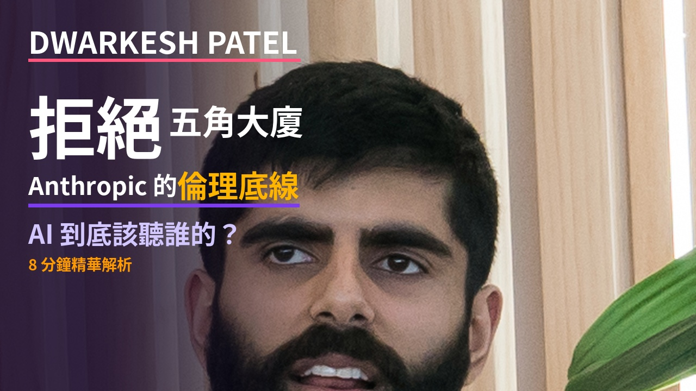
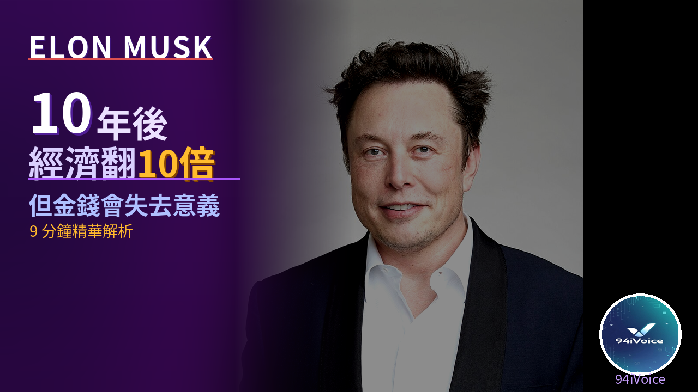

Palantir 的怪胎哲學：Alex Karp 如何用 AI 重寫戰爭規則
二十年的「怪胎秀」如何把資料骨架變成戰場 OS：AI 自動決策、矽谷與軍方的和解、美國真正的護城河。
S&P 500 還能存？因為AI浪潮 這位投資達人悄悄調整了三件事
Mark Tilbury 的投資策略大調整：百分之四十集中風險、全球分散 VWRP、黃金升格一級資產、巴菲特囤現金 3,730 億。
AI駭客大軍已啟動？這三件事讓我睡不著
Dr. Waku 解析三大威脅：AI 全自動攻擊企業、自動製造漏洞、全世界都沒準備好。
AI時代，你唯一的護城河是「你自己」
後AI高收入技能組合：主動性→品味→視角→說服力→技術工具。換人測試揭示你的不可取代性。

AI吸血鬼效應：正在改變你的工作與生活？
AI不只搶走工作，還在吸走意義。Stack Overflow、新聞媒體、職場人士都難逃吸血鬼效應。

Anthropic vs 國防部：AI 與威權的邊界
當AI公司拒絕替軍方服務，威權主義的過剩危機正在浮現。民主 vs 威權的AI軍備競賽。

Elon Musk：10年後經濟翻10倍，但金錢會失去意義
Abundance Summit 訪談精華。AI讓生產力爆炸，但我們準備好了嗎？9分鐘深度解析。